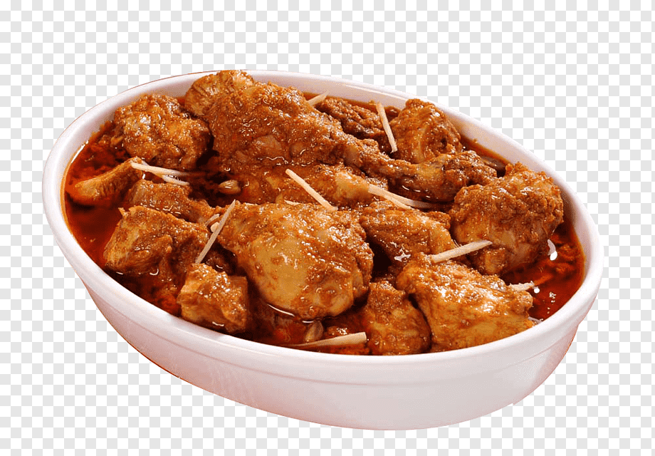

CHICKEN KARHAI:
-
Chicken Karahi
is one of them. Chicken Karahi Recipe or Chicken Kadai is a dish from the Indian subcontinent known for its
spicy flavour. It is notable in the kitchens of northern India and Pakistan. The Pakistani version contains no
peppers or onions, while the North Indian version uses bell peppers. The dish is prepared in a karahi. The
cooking time for Karahi is between 30 to 50 minutes. The word Karhai means “wok”. Traditionally, karahi was a
round cast iron pot. This gives it strength and good heat dissipation. It also had a ring-shaped handle on each
side for easy handling. This dish is traditionally cooked in a wok over high heat and is therefore called Karahi
chicken. This dish is one of the popular dishes in Pakistan and also cooked in functions and celebrations.
Almost every restaurant and hotel serves this dish.
There are many types of Chicken Karahi but here we will tell you about some of the dishes of Karahis.
Chicken white karahi:
Chicken karahi
White Chicken Karahi is a Pakistani fineness, especially an occasional one. It is a delicious dish based on
meat, ginger paste, yogurt and some different spices. Try a delicious homemade recipe and make your dinner
amazing. The recipe of this dish is simple and easy to cook but takes a bit of time.
Chicken tikka karahi:
Chicken Tikka
Another famous Southeast Asian dish is Chicken tikka, where tikka means small pieces or chunks of meat. Chicken
tikka recipe is, therefore, a small piece of chicken that is marinated with yoghurt and spices and then grilled
for a nice smoky flavour. Chicken tikka is a separate dish, but it is also widely used to make other popular
dishes such as chicken tikka masala, butter chicken, and now karahi chicken tikka.
Boneless chicken karahi:
Chicken karahi
Chicken boneless karahi is a bit more expensive than simple Karachi because it is boneless but it’s worth a try.
It is just like simple chicken karahi but the chicken in this karahi type is boneless so that people can eat
easily. Also you can make it with butter for adding more taste into it. This type of chicken karahi is available
in most of the restaurants. You can make it just like white karhai or tikka karhai or with any type of karhai
you want.
Chicken Koyla Karahi:
Chicken Karahi
Koyla Karahi recipe is a famous dish in Pakistan. It is cooked slightly differently than traditional Karahi.
Some of the restaurants in Karachi, Pakistan are especially known for making this Koyla Karahi recipe because it
tastes so good. It is called “Koyla Karahi” because “Koyla” means coal in Urdu so it is cooked with coal.
There are lots of Karahi types. You can either make it with chicken or mutton or beef. Or with different
techniques. It depends on you. We have discovered the best way to make Chicken Karahi and Mutton Karahi at home.
Back to Home Page